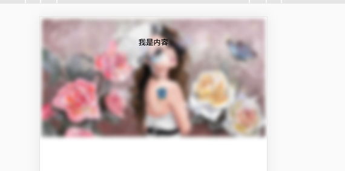
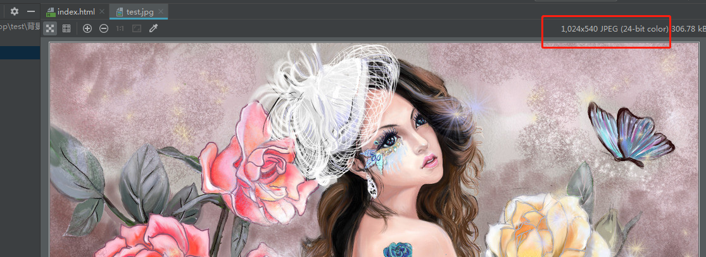

讲干货，不啰嗦，有时候前端会遇到背景虚化但要求内容清晰的需求，先看效果：

以下为具体实现：
<!DOCTYPE html>
<html lang="en">
<head>
<meta charset="UTF-8">
<title>背景虚化</title>
</head>
<body>
<div class="main">
<!-- 以下为背景虚化，其他内容清晰-->
<!-- 内容层-->
<div class="banner">
<div class="banner-contain">
<h1>我是内容</h1>
</div>
<!-- 背景层-->
<div class="banner-bg"></div>
</div>
</div>
<style>
.main{
width: 100%;
}
.banner{
width: 100%;
position: relative;
}
.banner-bg{
width: 100%;/*宽度铺满屏幕*/
padding-top: 52.734%;/*图片高度除以宽度，得到此值*/
background: url("test.jpg")center center no-repeat;/*两个center分别为水平和垂直方向的对齐方式*/
background-size: 100%;/*背景水平铺满*/
filter:blur(10px);/*虚化值，越大越模糊*/
}
.banner-contain{
position: absolute;/*设置内容层绝对定位*/
width: 100%;
text-align: center;
z-index: 6;/*将内容至于上层*/
margin-top: 6%;
}
</style>
</body>
</html>
1.自适应的实现：
设置div标签padding-top为百分比，padding和margin百分比值是依据宽度计算的而非屏幕高度，所以可以依此设置一个自适应的区域，比如图片信息如下

那么高宽比例为：540/1024 大概为52.734%，也就是高度为宽度的52.734%，这里宽度设置为100%，那么宽度的padding-top即为52.734%*100%
2.背景虚化内容清晰的实现：
设置两个层，一个是背景虚化层，自适应撑起整个外层div容器，通过filter:blur()属性设置虚化值，另一个为内容层，绝对定位，设置z-index提高内容层层次防止被遮挡，这样内容层不受虚化影响
能力有限，水平一般，错误之处，欢迎指正，感谢关注和评论！